Herb Leaf Classification System
By Ana Klabjan, Poulami Paul and Shubhankit Rathore
CS 766-Spring 2023
By Ana Klabjan, Poulami Paul and Shubhankit Rathore
CS 766-Spring 2023
The problem we are trying to solve is to accurately label different herbs in a
herb garden when a photo is taken. Specifically, we aim to identify the herbs parsley, thyme,
chives, and oregano, while labeling all other herbs as unclassified herb. The goal of this project
is to develop a computer vision model that can recognize these specific herbs in an image with high
accuracy and efficiency.
It might be out of curiosity for someone to figure out what kind of herbs they have in their garden
or forest. Accurate classification of herb leaves is critical for quality control, authentication,
and conservation of medicinal plants. Therefore, the proposed project aims to develop a herb leaf
classification system that can identify individual plants within a garden and differentiate between
different herb species based on their leaf images.
The problem we are trying to solve is important for several reasons. Firstly, it
can satisfy the curiosity of people who want to know what kind of herbs they have in their garden or
environment. This can be time-consuming and challenging for those without extensive herb knowledge.
Secondly, this tool can also be helpful for the food industry, as it can assist with quality control
in the production of herb-infused products and reduce the risk of misidentification, which can be
dangerous if a misidentified herb is consumed.
Lastly, accurate identification of herb leaves is crucial for quality control, authentication, and
conservation of medicinal plants. The development of a herb leaf classification system that can
identify different herb species based on their leaf images can aid in the production of medicines,
as well as the identification and preservation of endangered plant species. Additionally, the
accurate labeling of herbs in natural environments can provide valuable data for ecological studies,
aiding in the conservation and management of natural habitats. Therefore, it is crucial to develop a
computer vision model that can accurately and efficiently identify different herb species in images,
as it has practical applications for the food industry, herb enthusiasts, medicinal purposes, and
environmental research.
In recent years, herb classification using leaf images has gained significant
attention due to its potential applications in the fields of medicine, agriculture, and food
industry. The ability to accurately identify different herb species can help in quality control of
herbal products, detection of adulteration, and conservation of rare and endangered plant species.
Most of the existing studies in this area have focused on the extraction of features from images
that represent a singular leaf from an herb and their classification using various machine learning
algorithms. Texture features, color histograms, and shape descriptors are some of the commonly used
features for herb classification[3]. However, with the recent advancements in deep
learning, several studies have started exploring the use of convolution neural networks (CNNs) for
herb recognition based on leaf images[1].
Leaf identification normally use images that taken in the laboratory with sophisticated equipment
and a white background. The accuracy of these models have been high.
Current research has shifted the focus from high-quality plant images to identifying leaves in
natural environments. Leaf segmentation in natural environments has different approaches and
accuracy levels. There have been many studies that aim to identify leaves based on images taken in
their natural environment[2]. These studies all focused on the identification of a
singular leaf taken in nature. The accuracy of the models was lower than the models discussed in the
prior paragraph that used images taken with sophisticated equipment and a white background, but the
models were still considered successful, with high accuracy.
Our project intends to expand on the current state-of-the-art. The research for
identifying an individual leaf from nature has already been conducted, and our project expands on
it. However, we have not found any studies that take an image of numerous plants and segment the
image to locate each individual plant. Each segmented plant would then be fed into an identification
model, similar to the pre-existing ones. The original image would then be annotated using the model
output.
For plant segmentation, we have developed our own approach. Firstly, we will identify the center of
each individual plant and annotate it on the original image. To do this, we will convert the herb
garden image to grayscale, perform some noise removal, compute the edges/boundaries, and then
compute the "centers" of each object detected by the edges. Through implementation we found this
detected individual leaves more than plants as a whole. Thus leading us to the conclusion we will
need to perform some type of clustering.
Clustering will be used to find the true center of each plant instead of the noise and leaves. For
clustering, the goal was to find an algorithm that did not involve human input like k-means which
requires K to be specified. We considered several clustering algorithms including Hierarchical
clustering. The caviet was even though there is no original specified number of clusters, you would
have to identify a criteria on how to decide where to split the clusters in the hierarchy. For the
purpose of time we used K-means and predefined K based on manual inspection of each test image. If
there was additonal time we would create our own clustering algorith, one that would use the number
of points within an area (dense areas are likely plants due to many leaves) as well as distance
between these dense areas to identity one plant from another. Creating our own clustering algorithm
would hopefully elimate the false centers that aren't plants but noise. Another method to elimate
the false centers, would be preprocesses the points before clustering. The main approach would be to
filter the points by checking there pixel value and eliminate any that aren't green enough(most
likely noise instead of a plant part). We attempted to implement this preprocessing with trial/error
but no success, would require more research.
Using the true centers found by the clustering, subimages are extracted to feed into the model. A
formula was created to find the size of the subimage output based on the input image size and the
number of objects detected in the image. A rectangle of the specified size is placed around each
center thus creating the boundaries of the subimage.
Finally, these segmented image for identified plants would be sent to the classification model to
predict the type of plant. Each image will then be labelled as one of the possible plants as
discussed previously, or unidentifiable herb if the confidence score for the prediction is lower
than a pre-determined threshold.
For this project, we were unable to find an already existing dataset. Therefore, we
will be creating our own dataset for the training & testing of model from Google Images. To create
the training & testing set we will pull 500-1000 images from Google Images for each of our four
herb types: parsley, thyme, chives, and oregano, and split the set into 90% and 10% to train &
test.
For the final test set we will be pulling 20-30 images of herb gardens. We will manually label these
images to test the prediction of our trained model in presence of multiple herbs in a single image.
Our main goal is to segment these herb garden images to segment into different herb-leaves region
and then predict their type in the image and label them.
Each image will go through three steps to blurr any text:[4]
The image will be processed to create a dataset of object centers to be processed in Stage 3.The is done in four steps:
In this stage, the "centers" found in stage 2 are processed using K-means to find the true center of each plant. Unfortunately, this stage currently requires manual input for the value of K. In the future, we would like to find a clustering method that does not require human input to determine the optimal number of clusters.
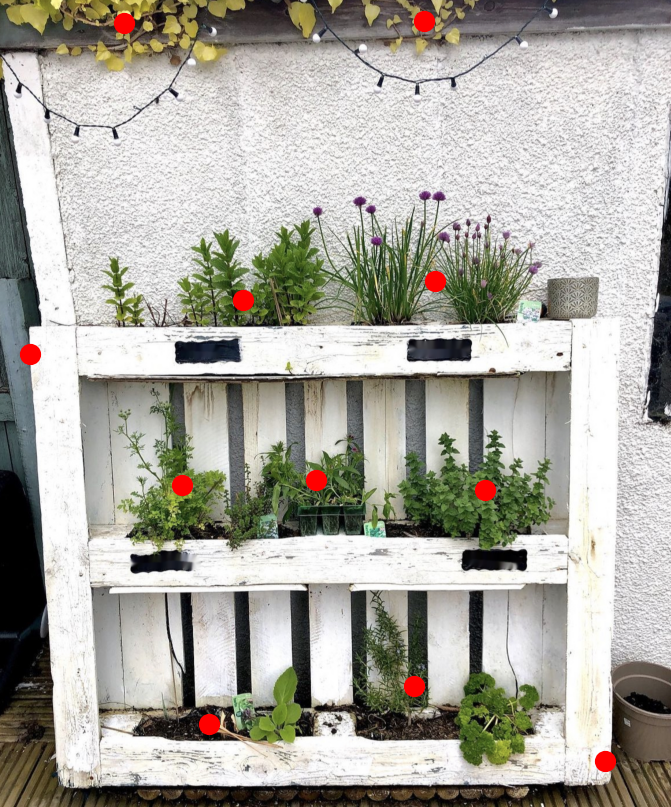In Stage 4 using the true centers found in stage 3, we extract surrounding pixels to create subimages of each plant. The formula used to calculate the size of the subimages is based off of the original image size and the number of plants in the image.
\[output_{size} = \sqrt{\frac{input\_img_{height} * input\_img_{width}}{num\_of\_plants * 1.5}}\]
For each x,y cordinate that indicates a plant center a box boundry is created using the following formula:
\[x_{min} = \max(0,x - \lfloor \frac{output_{size}}{2} \rfloor) \]
\[x_{max} = \min(input\_img_{width},x + \lfloor \frac{output_{size}}{2} \rfloor) \]
\[y_{min} = \max(0,y - \lfloor \frac{output_{size}}{2} \rfloor) \]
\[y_{max} = \min(input\_img_{height},y + \lfloor \frac{output_{size}}{2} \rfloor) \]
The box boundries are used to extract the subimages.
| 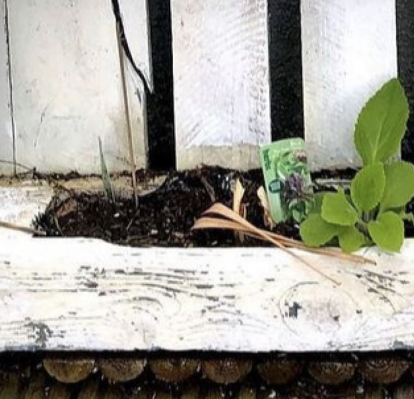 | 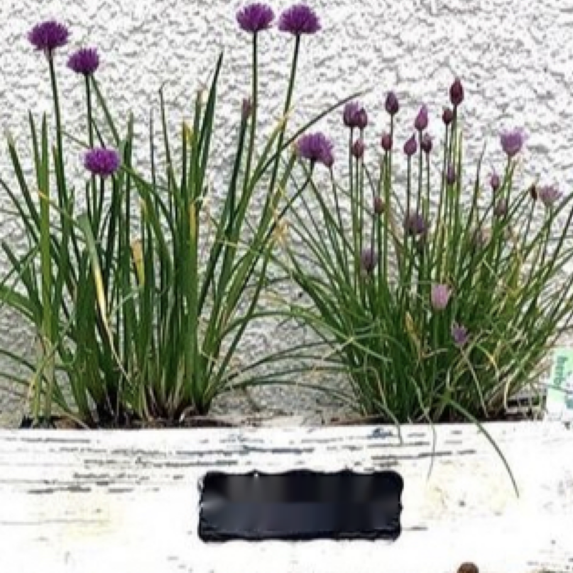 | 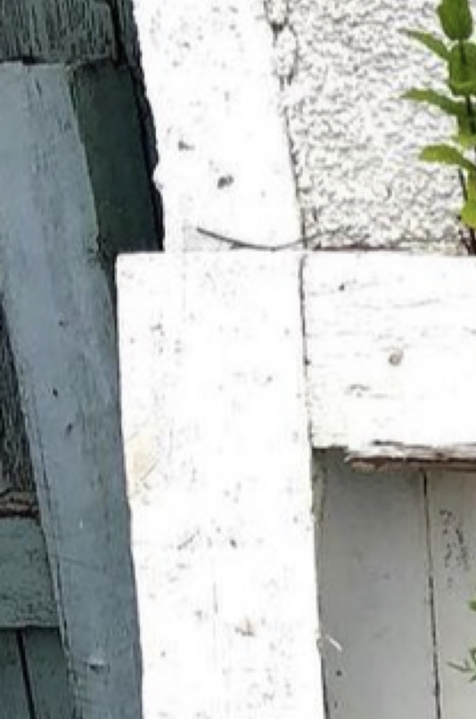 |
| 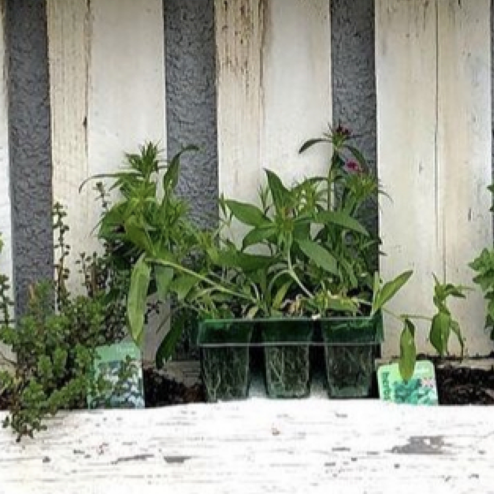 | 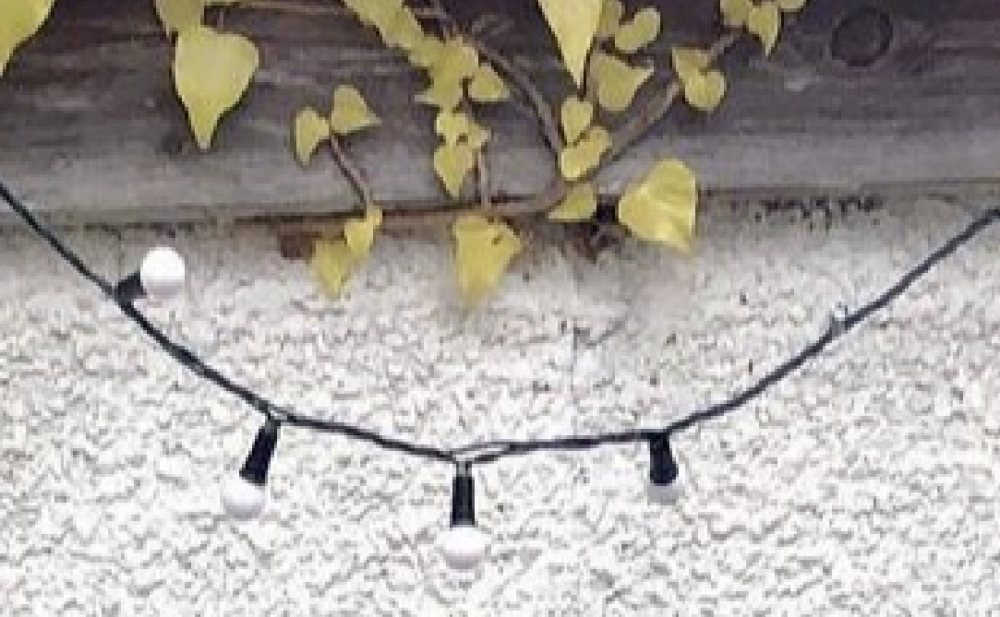 | 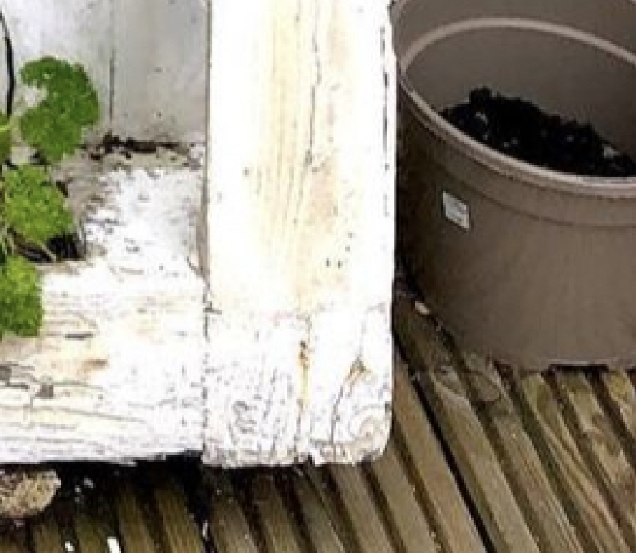 |
| 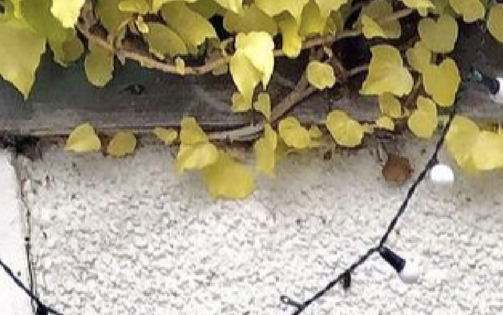 | 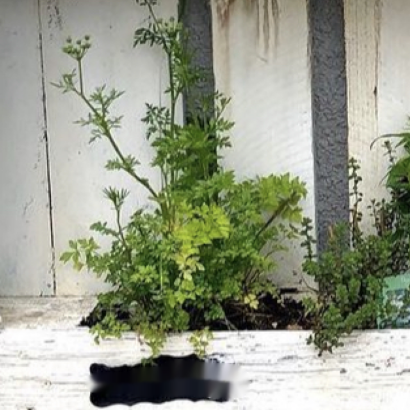 | 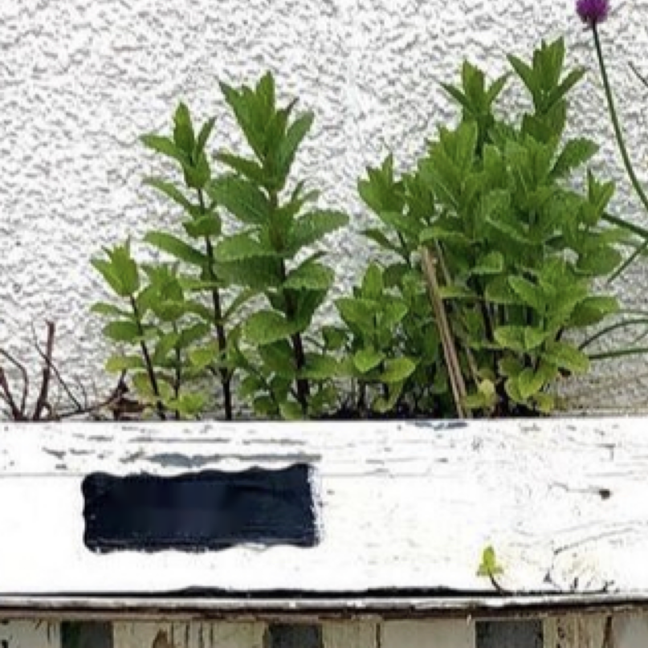 |
| 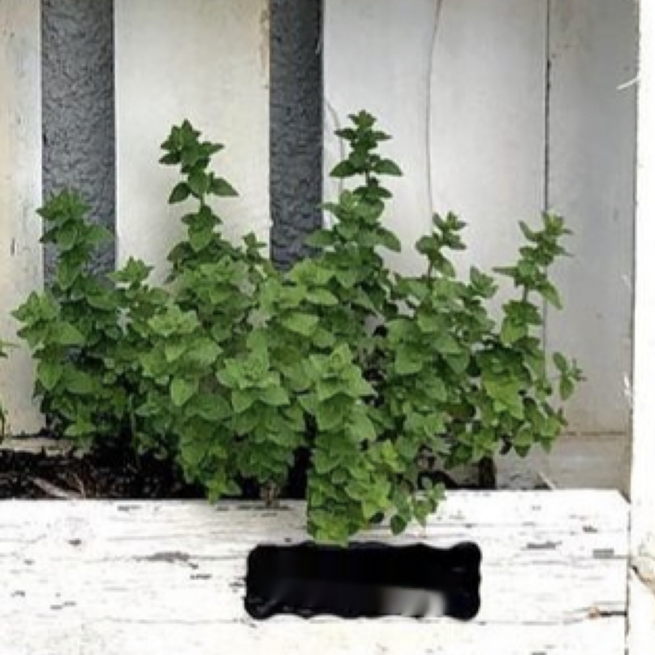 | 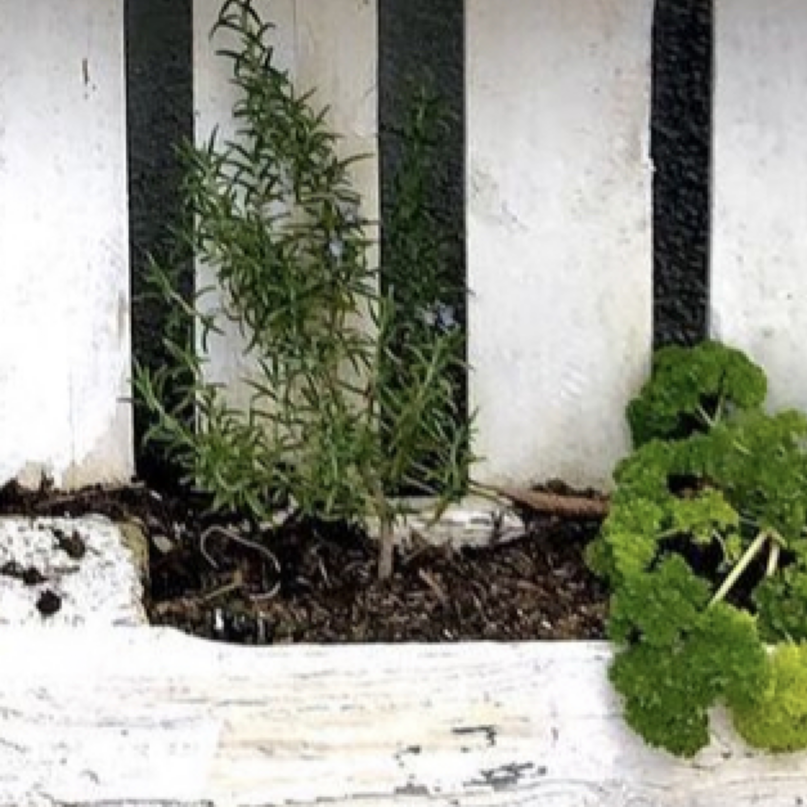 |
One of the main limitation of our current set up is that we only train our model on four herbs, when
in reality there are thousands of different herbs. At minimum it would be great to expand the model
to at least cover all of the commonly used spices and herbs used world wide in cooking. This would
make the application in the food industry much more useful.
In an ideal world, we would also use completely different images in training our model. Ideally we
would have enough pre-labeled images of herb gardens that would allow us to segment the image and
use the sub-images as the train and test set in our model as the model currently uses high quality
images of the herbs usually against a white background, this doesn't match the segmented images we
are feeding into the model for labeling.
Another challenge that we aim to tackle if time permits is to successfully segment the mixed leaf
scenario and identify the plants. In reality, the image of a garden could contain the interleaved
leaves into each other if plants are nearby. Current approach might find it difficult to segment
this scenario into two or multiple separate images. Hence, it would be a challenging task to develop
a model for identification of leaves in such a case.